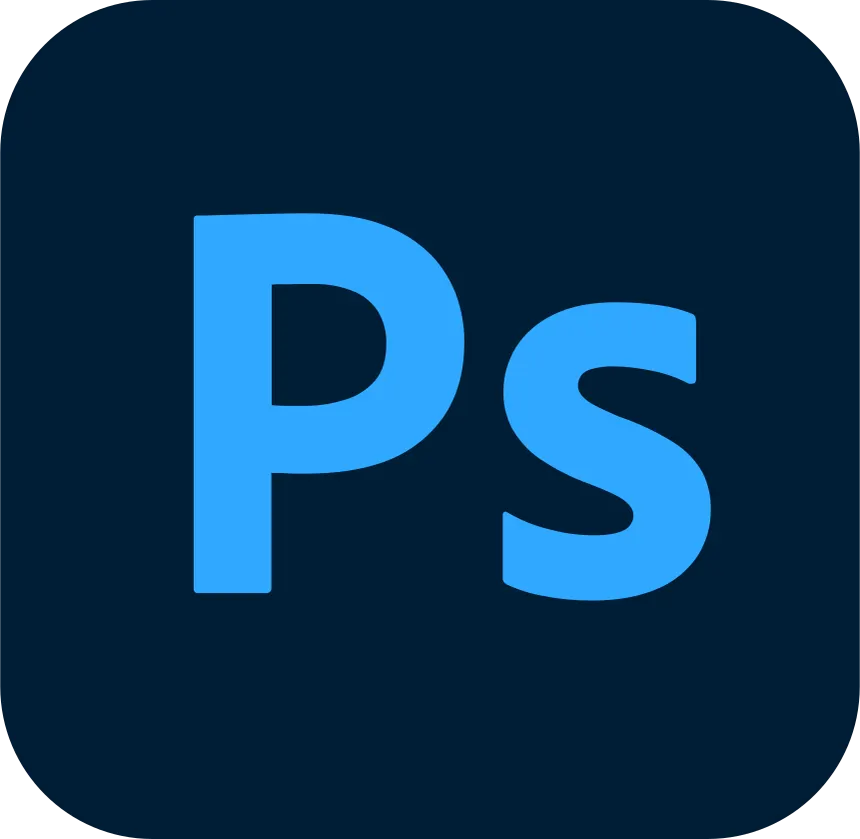

Portfolio
MAHIOU Ryad
Développeur de jeux vidéo
Necromancer x Magical Girl
- Langage
- C#
- Moteur
 Unity 6
Unity 6
Outils
 Blender
Blender Figma
Figma
Incarnez un Nécromancien ou une Magical Girl et explorez un donjon en coopération locale. Terrassez les ennemis, puis enrôlez-les dans votre armée pour surpasser celle de votre camarade.
- Mon rôle
- Gameplay & assets visuels
- Équipe
- 2 personnes
- Durée
- 10 jours
- Systèmes de combat : projectiles, hitboxes, dégâts et knockback.
- Moveset des deux personnages : capacités, déplacement et visée.
- Intégration et modification des assets et des animations.
- Intégration des feedbacks visuels : effets, particules, flashs et réactions aux impacts.
Tatamiam
- Langage
- C++
- Moteur
- EntreCôte
Outils
- Blender
- Figma
Incarnez un sushi et lancez votre propre restaurant-dojo ! Collaborez avec vos amis en ligne afin de préparer les plats qui correspondent à chaque client.
- Mon rôle
- Lead Tech · moteur & gameplay
- Équipe
- 3 développeurs
- Durée
- 4 semaines
- Intégration d’une API multijoueur dans un moteur custom.
- Architecture du jeu construite sur une base EC (entités/composants).
- Gameplay du joueur et son intégration visuelle.
- Synchronisation en ligne des différentes features.
IsekaiWar!
- Langage
- C++
- Bibliothèque
- SFML
Outils
- Figma

Photoshop
Protégez votre monde magique d’une attaque interdimensionnelle. Terrassez les vaisseaux aliens à l’aide de vos compétences magiques.
- Mon rôle
- Dev Gameplay
- Équipe
- 2 développeurs
- Durée
- 3 semaines
- Développement d’une architecture d’héritage complète.
- Intégration des classes abstraites de vie, de tirs et de déplacement.
- Développement des différents projectiles et power-ups.
- Intégration visuelle du fond et des projectiles.
EntreCôte
- Langage
- C++
- API de rendu
- DirectX 12
Un moteur de jeu 3D avec un rendu DirectX 12 et une architecture EC (entités/composants). La vidéo présente sa sandbox et Sushi Adventure, un mini-jeu développé en 3 jours.
- Mon rôle
- Dev Moteur
- Équipe
- 3 développeurs
- Durée
- 3 semaines
- Gestion du pipeline de rendu 3D.
- Encapsulation de DXII et de la data.
- Création du moteur physique avec ses collisions.
- Systèmes et composants pour la physique, les renderers et l’animation.